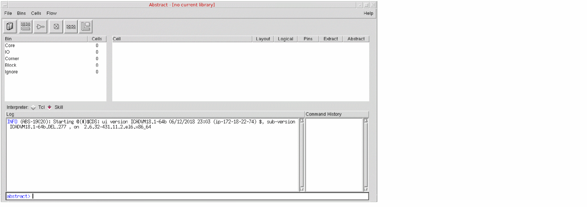

Launching the Standalone Abstract Generator
You can launch the standalone Abstract Generator directly from the installation directory.
To launch the standalone interface:
-
Ensure that you have the following directory in your path:
your_install_dir/tools/dfII/bin
-
Move into the run directory. You can run Abstract Generator from any directory, but preferably not from the release hierarchy.
-
Type
abstract at the command line prompt. You can specify various arguments with the abstract command, such as:
abstract
[-replay filename]
[-log filename]
[-tcl]
[-nogui]
[-V | -W]
[-dbType]
[-cdslib path]
[-help]
These arguments are described below.
|
Argument
|
Description
|
|
-replay filename
|
Specifies a TCL or SKILL replay file to be run automatically when Abstract Generator launches. The format of the replay file depends on the extension language setting. By default, Abstract Generator operates in the SKILL mode.
|
|
-log filename
|
Specifies the name of the log file to be generated for the current session. By default, the log file is named abstract.log.
|
|
-tcl
|
Sets the extension language to TCL. This means that Abstract Generator recognizes only TCL commands in its command line and replay file. By default, Abstract Generator operates in the SKILL mode.
|
|
-nogui
|
Disables the graphical user interface. Abstract Generator operates directly from the command line prompt in the shell window.
|
|
-V | -W
|
Displays version information.
% abstract -V
Abstract version 5.2.2 03/23/05 15:10 (hostname)
Displays subversion information.
% abstract -W
sub-version ICOA5.2.51.14
When reporting problems, provide the information returned by the -W argument to customer support.
|
|
|
-dbType
|
Displays the name of the database used.
% abstract -dbType
OPENACCESS
|
|
-cdslib path
|
Specifies the relative or complete path to a cds.lib file. Abstract Generator reads the cds.lib to read the list of libraries to be loaded.
|
|
-help
|
Displays the list of arguments for the abstract command.
|
When you type the abstract command at the command line prompt, the Abstract Generator form is displayed.

Related Topics
Inspect the Results of Generated Abstracts
Return to top